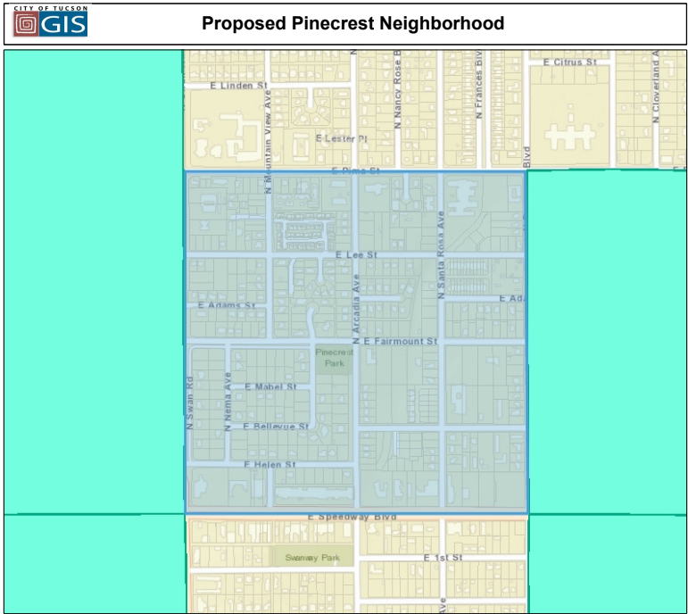

Welcome to the Pinecrest Neighborhood Association!
Who are we?
The purpose of our neighborhood association is to create a sense of community and safety by fostering communication, hosting get-togethers, working on neighborhood beautification, advocating for neighborhood improvements, and collaborating with other neighborhoods.
Where are we located?
We are located in the Pinecrest neighborhood, which is bounded by E Pima St on the north, E Speedway Blvd on the south, N Swan Rd on the west, and N Rosemont Blvd on the east.
What is a neighborhood association?
A neighborhood association is a group of neighbors who work together to improve and maintain the quality of life in their neighborhood. Neighborhood associations are recognized by the City of Tucson and can be a powerful voice for the neighborhood.
Neighborhood Associations are not Homeowners Associations.
- Homeowners Associations are mandatory organizations with legal power to enforce rules within a development.
- Neighborhood Associations are voluntary organizations comprised of property owners, renters, and businesses within the neighborhood that generally focus on community advocacy and/or community.